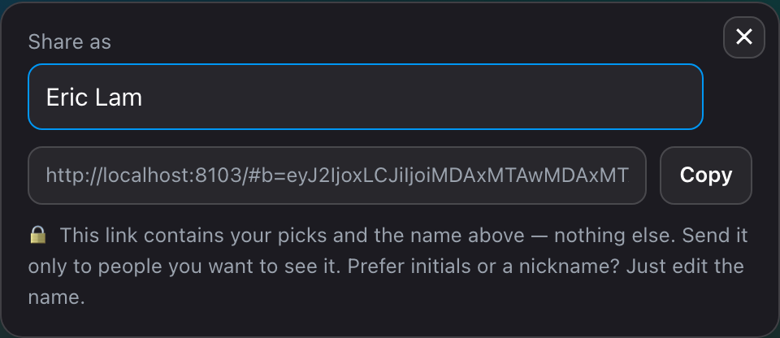

A coworker taps one button. The standings reshuffle. No login. No server. No name shown anywhere they did not choose.
Here is the moment it became real. A coworker opens a link I texted them. No install. No instructions. Their screen fills with a live World Cup dashboard. My bracket, scored against real results, updated three times a day. One button reads Add to my leaderboard. They tap it. Now we rank against each other. Every finished match reshuffles the standings on its own.
Total running cost stays at zero dollars. It looks like a shortcut. It became the whole design.
Hi everyone. I am Eric, a Cloud Solution Architect at Microsoft. I help people make progress with AI. Here I turned the same lens on myself. Set a vision. Understand the outcome. Use every tool to build it. Let me show you how it went, so you build it too.
 You rank first, live
You rank first, live
Where everything lives
| Your bracket | Your browser storage, on your device, not ours. |
| A share link | Inside the URL you send. Nothing gets written when you make it. |
| Rivals you add | Your browser storage, same as your own. |
| Live match results | One JSON file on GitHub, updated three times a day by a bot. |
| Server-side data | None. No server. |

The big idea: social, with no backend
sled-mywcbracket 43 commits · Jul 7 to 8Single dashboards worked. Brackets are a social game. The point is watching how you stack up against your friends. Every obvious build meant a backend. Accounts, a database, hosting bills, and the real dealbreaker, a central place holding my coworkers' real names whether they opted in or not.
I kept turning one idea over. A share link carries the bracket itself, so adding someone to your leaderboard never touches a server.
It fits in a link.
A bracket is 31 win-or-lose choices. 31 bits, plus a display name and a tiebreaker. Encoded, it runs about 140 characters inside the URL fragment, the part after the
#. By HTTP's own rules, browsers never send the fragment to a server. Not to GitHub. Not to anyone. The privacy is not a policy. It is physics.
Your whole bracket rides here#. Set a share-as name, initials or an alias, and it is the only identity the link carries.Under the hood The whole bracket, encoded into a URL ▾
The wire format stays boring and readable. base64url of a small JSON object. The careful part is the bit order. Later rounds depend on earlier picks, so encode and decode both walk the tree in the same order.
export function encodeShare(picks, topology) { const S = deriveStructure(topology); const sel = {}; picks.r32.forEach(m => { sel[m[0]] = m[4]; }); S.r16codes.forEach((c, j) => { sel[c] = picks.r16_win[j]; }); // …qf, sf, final… let bits = ""; for (const c of codeOrder(S)) { const [a, b] = teamsFor(S, c, sel); bits += sel[c] === a ? "0" : "1"; } const payload = { v: 1, b: bits, n: String(picks.entrant || ""), t: picks.tiebreaker | 0 }; return b64url(new TextEncoder().encode(JSON.stringify(payload))); }Decoding reverses it, then revalidates against the fixed tree. A truncated or newer-version link fails with a clear message instead of rendering garbage. Hanselman's rule. Every error says what broke.
#b=base64url( JSON { v:1, b:"<31 chars of 0|1>", n:"display name", t:tiebreaker } )Nothing gets written when you generate a link. Rivals live in one browser key. The sync bot only rewrites the shared results file.